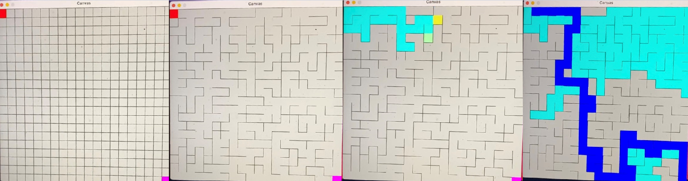

Randomized Mazes
The Random Maze Generator was created in April of 2021, made entirely from Java. The project constructs random mazes and can solve and display the solutions in many different ways. At the start of the program (img 1), the user has a fully blocked grid, with each blockage being broken and animated using Kruskal's algorithm for random minimum spanning trees. After the maze construction is finished (img 2), the program will automatically solve the maze using a depth-first search algorithm. Using a breadth first search or manually solving the maze is also an available option using keyboard commands. As the Maze is being solved, the program shows all squares that have already been searched, as well as signifying the leading square (img 3). There are additional options for animating the distance from the start or the distance from the finish of each cell in the maze. Upon finishing the maze, the final path is revealed with a blue stripe (img 4).
To check out this project, or run it for yourself, visit *PUT LINK HERE* and download the repo.